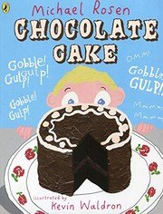
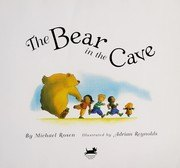
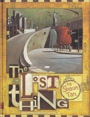
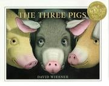
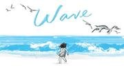
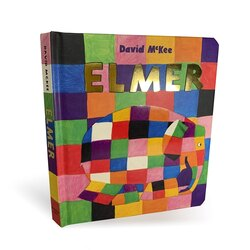
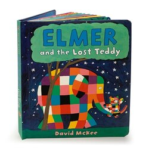
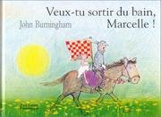
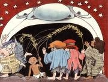

Authors and Illustrators
Explore how picturebook creators use words, images and book design across their work.
122 reading-list entries
For more recommendations, explore BookTrust’s Bookfinder.
Author studies
An author study: Anthony Browne
Look for visual clues that recur from book to book, then compare whose point of view shapes each story.
 Cover pending
Cover pendingVoices in the Park
Anthony Browne
The Tunnel
Anthony Browne
- Cover pending
Willy’s Pictures
Anthony Browne
Willy and the Cloud
Anthony Browne

Gorilla
Anthony Browne

Willy the Wimp
Anthony Browne
- Cover pending
Piggybook
Anthony Browne

Zoo
Anthony Browne

Into the Forest
Anthony Browne
Link edition: ISBN 9781844285594 · paperback · imusti, Walker Books Ltd · Sep 05, 2005 · Edition record

Silly Billy
Anthony Browne
Link edition: ISBN 9781406305760 · paperback · Walker Childrens, Walker Books Ltd · Nov 05, 2007 · Edition record

Little Beauty
Anthony Browne

The Shape Game
Anthony Browne

Through the Magic Mirror
Anthony Browne
An author study: Michael Rosen
Read the books aloud to hear how repetition, pauses and changes of voice shape the story. Compare what each illustrator adds to Rosen’s words.

 Cover pending
Cover pendingMichael Rosen’s Sad Book
Michael Rosen · Quentin Blake
2004 · Walker Books
Link edition: ISBN 9781406317848 · paperback · imusti, CandlewickPress(MA) · Feb 28, 2005 · Edition record

We’re Going on a Bear Hunt
Michael Rosen · Helen Oxenbury
1989 · Walker Books
Link edition: ISBN 9781406366198 · hardcover · WALKER BOOKS · 2001 · Edition record

This Is Our House
Michael Rosen · Bob Graham
1996 · Walker Books

Little Rabbit Foo Foo
Michael Rosen · Arthur Robins

Chocolate Cake
Michael Rosen · Kevin Waldron
2017 · Puffin
Link edition: ISBN 9780141379203 · paperback · Penguin Uk · 2018 · Edition record

A Great Big Cuddle: Poems for the Very Young
Michael Rosen · Chris Riddell
2015 · Walker Books
Link edition: ISBN 9781406343199 · Walker Books · 2015 · Edition record

The Bear in the Cave
Michael Rosen · Adrian Reynolds
2007 · Bloomsbury

The Bus Is for Us!
Michael Rosen · Gill Tyler
2015 · Walker Books

Tiny Little Fly
Michael Rosen · Kevin Waldron
2010 · Walker Books

Red Ted and the Lost Things
Michael Rosen · Joel Stewart
2009 · Walker Books
Dear Mother Goose
Michael Rosen · Nick Sharratt
2008 · Walker Books
- Cover pending
Bananas in My Ears
Michael Rosen · Quentin Blake
2011 · Walker Books
Link edition: ISBN 9781406337556 · Edition record
An author study: Grace Lin
Compare how Lin draws on family life, food and folklore, and how she moves between everyday settings and imagined worlds.

The Ugly Vegetables
Grace Lin
- Cover pending
Dim Sum for Everyone!
Grace Lin
· New York: Alfred A. Knopf
A family shares small dishes at a dim sum restaurant, with details that invite children to talk about food and family routines.
- Cover pending
Kite Flying
Grace Lin
· New York: Alfred A. Knopf
A family makes and flies a dragon kite together.
Link edition: ISBN 9780553112542 · Paperback · Dragonfly Books · May 11, 2004 · Edition record

Fortune Cookie Fortunes
Grace Lin
- Cover pending
Bringing In the New Year
Grace Lin
· New York: Alfred A. Knopf
A Chinese American family prepares for Lunar New Year through shared household traditions.
Link edition: ISBN 9780375837456 · Hardcover · Knopf Books for Young Readers · January 8, 2008 · Edition record

Thanking the Moon: Celebrating the Mid-Autumn Moon Festival
Grace Lin
Link edition: ISBN 9780375861017 · Alfred A. Knopf · 2010 · Edition record
- Cover pending
A Big Mooncake for Little Star
Grace Lin
· New York: Little, Brown and Company
A playful story about the phases of the moon, inspired by the Mid-Autumn Festival.
Link edition: ISBN 9780316404488 · Little Brown & Company, Little, Brown and Company · 2018 · Edition record

A Big Bed for Little Snow
Grace Lin
Link edition: ISBN 9780316478366 · hardcover · Little, Brown Books for Young Readers · Oct 15, 2019 · Edition record
An author study: Jeannie Baker
Compare how collage and successive views of the same place show environmental change over time.
Where the Forest Meets the Sea
Jeannie Baker

Window
Jeannie Baker
Link edition: ISBN 9780744594867 · Paperback · Walker Books Ltd · November 4, 2002 · Edition record

Belonging
Jeannie Baker

Mirror
Jeannie Baker
Link edition: ISBN 9781406309140 · hardcover · Walker Childrens Hardbacks · Aug 24, 2010 · Edition record
- Cover pending

The Hidden Forest
Jeannie Baker

Desert Jungle
Jeannie Baker
An author study: Shaun Tan
Compare how unusual settings and changes of scale create a sense of strangeness, displacement or belonging.

The Arrival
Shaun Tan
Link edition: ISBN 9780734415868 · paperback · Hodder Childrens Books · Aug 24, 2014 · Edition record

The Red Tree
Shaun Tan

The Lost Thing
Shaun Tan

Cicada
Shaun Tan

Eric
Shaun Tan
Link edition: ISBN 9781338622089 · hardcover · Scholastic Press · Oct 20, 2020 · Edition record

Rules of Summer
Shaun Tan

The Rabbits
John Marsden (author) · Shaun Tan (illustrator)

Memorial
Gary Crew (author) · Shaun Tan (illustrator)
An author study: David Wiesner
Compare how framing, page turns and repeated visual details guide the reader through wordless and near-wordless stories.

Tuesday
David Wiesner

Flotsam
David Wiesner
Link edition: ISBN 9781849394499 · paperback · Andersen Press Ltd · Aug 24, 2001 · Edition record

Sector 7
David Wiesner

Free Fall
David Wiesner

The Three Pigs
David Wiesner
Link edition: ISBN 9781849394055 · Andersen Press · 2012 · Edition record

Mr. Wuffles!
David Wiesner
Link edition: ISBN 9780618756612 · Hardcover · Clarion Books, Houghton Mifflin Harcourt · 2013 · Edition record

Art & Max
David Wiesner

Hurricane
David Wiesner
An author study: Suzy Lee
Compare how Lee uses the gutter and the edges of a spread to create boundaries that characters and readers can cross.

Wave
Suzy Lee
Link edition: ISBN 9780811859240 · Hardcover · Chronicle Books · April 16, 2008 · Edition record
- Cover pending
Mirror
Suzy Lee

- Cover pending
- Cover pending
The Zoo
Suzy Lee

Open This Little Book
Jesse Klausmeier (author) · Suzy Lee (illustrator)
Compare the nested books with Lee’s use of page boundaries in her wordless work.
An author study: Beatrice Alemagna
Compare how texture, scale and changes of perspective bring a child’s curiosity and uncertainty into view.
- Cover pending
The Wonderful Fluffy Little Squishy
Beatrice Alemagna

On a Magical Do-Nothing Day
Beatrice Alemagna
- Cover pending
Harold Snipperpot’s Best Disaster Ever
Beatrice Alemagna

Never, Not Ever!
Beatrice Alemagna
Link edition: ISBN 9780063076495 · hardcover · HarperCollins · Jul 13, 2021 · Edition record
- Cover pending
You Can’t Kill Snow White
Beatrice Alemagna
Link edition: ISBN 9781592703814 · Enchanted Lion Books, LLC · 2022 · Edition record

A Lion in Paris
Beatrice Alemagna
Link edition: ISBN 9781849761710 · Tate Publishing · 2014 · Edition record
An author study: David McKee
Compare how McKee uses colour to explore belonging in Elmer and conflict in Tusk Tusk. In Two Monsters and Not Now, Bernard, what can readers see that the characters miss?
David McKee’s publisher profile

Cover pending Cover pending
Cover pendingElmer and the Rainbow
David McKee
Andersen Press editions
Publisher editionLink edition: ISBN 9781842707166 · Paperback · Andersen Press · December 14, 2009 · Edition record

Cover pending Cover pending
Cover pending Cover pending
Cover pendingTwo Monsters
David McKee
Andersen Press editions
Publisher editionLink edition: ISBN 9781842708316 · Paperback · Andersen Press · March 16, 2009 · Edition record
 Cover pending
Cover pending Cover pending
Cover pending Cover pending
Cover pendingTwo Can Toucan
David McKee
Andersen Press editions
Publisher editionLink edition: ISBN 9781839130212 · paperback · Andersen Press · Edition record
An author study: John Burningham
Read Come Away from the Water, Shirley alongside Time to Get Out of the Bath, Shirley. How do the illustrations make room for an imaginary adventure alongside an ordinary conversation?

 Cover pending
Cover pending- Cover pending
- Cover pending

Time to Get Out of the Bath, Shirley
John Burningham
First published 1978
Link edition: ISBN 9780099200512 · Red Fox · March 27, 1994 · Edition record


John Patrick Norman McHennessy: The Boy Who Was Always Late
John Burningham
First published 1987
- Cover pending
An author study: Maurice Sendak
Compare how page layout and scale mark the journey into fantasy in Where the Wild Things Are, In the Night Kitchen and Outside Over There.
- Cover pending
- Cover pending

- Cover pending
Higglety Pigglety Pop! or There Must Be More to Life
Maurice Sendak
First published 1967
Link edition: ISBN 9781782952220 · Edition record

- Cover pending


Bumble-Ardy
Maurice Sendak
First published 2011
Link edition: ISBN 9780062051981 · Hardcover · Harper Collins · 2011 · Edition record
Illustrator studies
An illustrator study: Yu Rong
Look at how paper-cut shapes, texture and line convey movement and sensation. Compare a school scene in Shu Lin’s Grandpa with a dance sequence in The Visible Sounds.
Yu Rong bibliography or profile
 Cover pending
Cover pending- Cover pending
The Visible Sounds
Yin Jianling (author) · Yu Rong (illustrator)
Link edition: ISBN 9781912979790 · UCLan Publishing · 2021 · Edition record
- Cover pending
The Boy Who Loves to Lick the Wind
Fiona Carswell (author) · Yu Rong (illustrator)
- Cover pending
Ming the Panda
Jake Hope (author) · Yu Rong (illustrator)
Link edition: ISBN 9781915659859 · Paperback · Edition record

An illustrator study: Sydney Smith
Compare how cropping, light and colour make places feel different when seen from a child’s point of view.
Sydney Smith bibliography or profile
- Cover pending
Small in the City
Sydney Smith (author-illustrator)
Link edition: ISBN 9781406392982 · paperback · WALKER BOOKS · Edition record
- Cover pending
Town Is by the Sea
Joanne Schwartz (author) · Sydney Smith (illustrator)
Link edition: ISBN 9781406378863 · paperback · Walker Books · May 03, 2018 · Edition record

I Talk Like a River
Jordan Scott (author) · Sydney Smith (illustrator)
Link edition: ISBN 9781529502817 · Walker Books, Limited · 2022 · Edition record
- Cover pending
My Baba’s Garden
Jordan Scott (author) · Sydney Smith (illustrator)
Link edition: ISBN 9780823450831 · Holiday House, Incorporated, Neal Porter Books · 2023 · Edition record
- Cover pending
Do You Remember?
Sydney Smith (author-illustrator)
Link edition: ISBN 9781529519914 · Walker Books, Limited · 2023 · Edition record
An illustrator study: Laura Carlin
Look at how Carlin changes scale and uses empty space to shape a reader’s sense of place.
Laura Carlin bibliography or profile
 Cover pending
Cover pending- Cover pending
The Promise
Nicola Davies (author) · Laura Carlin (illustrator)
Link edition: ISBN 9781406355598 · paperback · Walker Books · 2014 · Edition record
- Cover pending
The Iron Man
Ted Hughes (author) · Laura Carlin (illustrator)
- Cover pending
A World of Your Own
Laura Carlin (author-illustrator)
An illustrator study: Quentin Blake
Compare the movement of Blake’s line in a wordless story with what it conveys in an illustrated account of grief.
Quentin Blake bibliography or profile

Clown
Quentin Blake (author-illustrator)
- Cover pending
The Green Ship
Quentin Blake (author-illustrator)
Link edition: ISBN 9780099253327 · Paperback · RED FOX BOOKS (RAND) · May 4, 2000 · Edition record
- Cover pending
Mrs Armitage on Wheels
Quentin Blake (author-illustrator)
Link edition: ISBN 9780099400523 · Red Fox · 1999 · Edition record
- Cover pending
Michael Rosen’s Sad Book
Michael Rosen (author) · Quentin Blake (illustrator)
Link edition: ISBN 9781406317848 · paperback · imusti, CandlewickPress(MA) · Feb 28, 2005 · Edition record
An illustrator study: Christian Robinson
Compare how bold shapes, colour and shifts in viewpoint invite readers into ordinary scenes and imagined spaces.
Christian Robinson bibliography or profile

Another
Christian Robinson (author-illustrator)
Link edition: ISBN 9781534421677 · hardcover · Atheneum Books for Young Readers, Atheneum, Books for Young Readers, an imprint of Simon & Schuster Children's Publishing Division · Mar 05, 2019 · Edition record

You Matter
Christian Robinson (author-illustrator)
Link edition: ISBN 9781471195235 · Simon & Schuster, Limited · 2020 · Edition record

Last Stop on Market Street
Matt de la Peña (author) · Christian Robinson (illustrator)
- Cover pending
School’s First Day of School
Adam Rex (author) · Christian Robinson (illustrator)
An illustrator study: Julie Flett
Look at how season, colour and space establish relationships between people, animals and place.
Julie Flett bibliography or profile

Birdsong
Julie Flett (author-illustrator)
Link edition: ISBN 9781771644730 · Greystone Books Ltd. · 2019 · Edition record

We All Play
Julie Flett (author-illustrator)
Link edition: ISBN 9781778402104 · Greystone Books Ltd. · 2024 · Edition record

My Heart Fills with Happiness
Monique Gray Smith (author) · Julie Flett (illustrator)

Still This Love Goes On
Buffy Sainte-Marie (author) · Julie Flett (illustrator)
Link edition: ISBN 9781771648073 · Greystone Books Ltd. · 2022 · Edition record
An illustrator study: Baek Heena
Compare how photographed sets, handmade figures and lighting give familiar places a sense of wonder.
Baek Heena bibliography or profile
- Cover pending
알사탕 (Magic Candies)
Baek Heena (author-illustrator)
Link edition: ISBN 9781542029599 · English translation · Edition record

Moon Pops
Baek Heena (author-illustrator)
- Cover pending
Cloud Bread
Baek Heena (author-illustrator)
- Cover pending
I Am a Dog
Baek Heena (author-illustrator)
Selected covers from publishers. Additional edition covers supplied by Open Library where available.